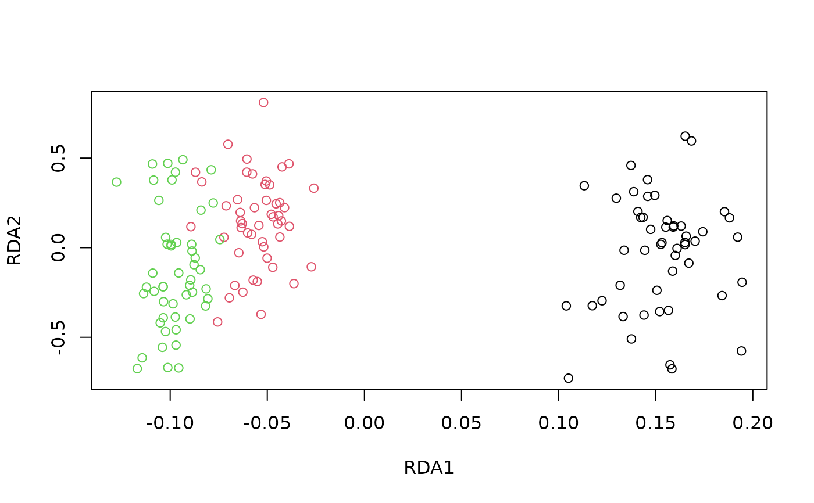

Constrained ordination of samples from their feature abundances: the
axes of a (normalized) count table that sample metadata explain, followed
by principal components of what they leave unexplained. Gives the same
results as vegan::rda(), computed straight from sparse input without
forming any \(n \times n\) or dense table, so it takes far less
time and memory for large datasets. With norm = 'hellinger' or
norm = 'chord' it is transformation-based RDA (tb-RDA); with
Condition() terms, partial RDA.
Usage
rda(
counts,
groups,
data = NULL,
formula = NULL,
margin = 1L,
norm = "none",
pseudocount = NULL,
scale = FALSE,
n_axes = 3L,
cpus = n_cpus()
)Arguments
- counts
A numeric matrix of feature abundances (samples \(\times\) features), or any of the table types listed under "Input Types". Alternatively, as in
vegan::rda(), a formula with the table on its left-hand side and the constraints on its right, such ascounts ~ treatment, in place ofcountsandformula; the metadata may then be given second, as inrda(counts ~ treatment, meta).- groups
The one variable that constrains the ordination: a vector or factor with one value per sample, matched to the samples in
countsby name when both are named, else in the same order. Or, whendatais given, the name of one of its columns (or a vector with one value per row ofdata). Categories (factor, character, or logical) or a numeric covariate. The same asformula = ~ groups. Givegroupsorformula, or neither for an unconstrained RDA, which is a PCA.- data
Sample metadata: a data frame with one row per sample, holding the columns named in
groupsorformula. Rows are matched to the samples incountsby row name, and rows for other samples are ignored; without row names, they must be in the same order as the samples. Default:NULL.- formula
Instead of
groups, for models of several variables: a one-sided formula naming the variables indatathat constrain the ordination, such as~ treatment + ph. Factors, numeric covariates, and interactions are all allowed. Wrap variables inCondition()to remove their effect first (partial RDA), as invegan::rda():~ treatment + Condition(site). With onlyCondition()terms, the result is the PCA of the table after removing their effect. A left-hand side, if given, is ignored. Default:NULL.- margin
The margin containing samples.
1if samples are rows,2if samples are columns. Ignored whencountsis a special object class (e.g.phyloseq). Default:1- norm
Normalize the incoming counts before the PCA. Options are:
'none': No transformation.'percent': Relative abundance (sample abundances sum to 1).'chord': Each sample scaled to unit length (Euclidean norm 1).'hellinger': Square root of relative abundance (the Hellinger transformation).'binary': Presence/absence (each count is either 0 or 1).'clr': Centered log ratio, giving an Aitchison PCA.'rclr': Robust centered log ratio. Zeros stay 0.'log': Log relative abundance (log-TSS), withpseudocountadded to every value first.
Default:
'none'.- pseudocount
Value added to counts to handle zeros when
norm = 'clr'or'log'. Ignored for other normalization methods. See Pseudocount section.- scale
Scale each feature to unit variance (after
norm, before the analysis), as invegan::rda(scale = TRUE)andpca()'sscale, so that every feature has equal weight. Features with constant values are left out. Default:FALSE- n_axes
The number of axes to return. Default:
3. Reduced, with a warning, to the number of axes with positive eigenvalues, which is at most \(n - 1\) for \(n\) samples.- cpus
How many parallel processing threads should be used. The default,
n_cpus(), will use all logical CPU cores.
Value
A numeric matrix with one row per sample and one column per axis,
as described in "Ordination result" below. Constrained axes come first,
named "RDA1", "RDA2", etc. If the constraints give fewer than
n_axes of them, unconstrained axes follow, named "PC1", "PC2",
etc. The values are vegan's site scores ("wa" scores, scaling 2):
what vegan::scores(x, display = "sites") returns and what
phyloseq::plot_ordination() plots. Its attributes are those of
dbrda(), with the same meanings, plus loadings:
method:"rda".eig: The variance of each axis.prop: The proportion of the variance that each axis explains, not counting the conditional variance:eig / (trace - inertia[["conditional"]]).vegan's "Proportion Explained".trace: The total variance: the sum of all features' variances (afternormandscale), aspca()'strace.inertia: The total variance split into three parts, which add up totrace: a named vector ofconditional: explained by theCondition()variables (0if there are none);constrained: explained by the constraints, after the conditions (the sum of all constrained eigenvalues);unconstrained: the rest.
constrained_eig: Every non-zero constrained eigenvalue.r_squared: The proportion of the total variance that the constraints explain,inertia[["constrained"]] / trace, asvegan::RsquareAdj(x)$r.squared.adj_r_squared:r_squaredadjusted for the number of constraint columns, asvegan::RsquareAdj(x)$adj.r.squared; seedbrda()for the formula, with and without conditions.NAwhen the model leaves no residual degrees of freedom.biplot: Biplot scores of the constraints: one row per column of the model matrix and one column per axis (0for unconstrained axes).vegan::scores(x, display = "bp").centroids: The centroid of each factor level on each axis, asvegan::scores(x, display = "cn"), orNULLif no variable is a factor.loadings: The species scores: one row per feature and one column per axis,vegan::scores(x, display = "species")(scaling 2). Unlikepca()'sloadings, these are not unit-length: each axis's are scaled by the square root of its share of the variance, so that the sites and species form a correlation biplot, as invegan.
Details
Method
With \(Z\) the normalized table (samples in rows), \(J\) the
centering matrix, and \(D\) the diagonal matrix of the features'
standard deviations (or the identity when scale = FALSE), RDA (Rao
1964; Legendre & Legendre 2012, §11.1) analyzes the centered table
\(Y = JZD^{-1} / \sqrt{n - 1}\). With \(H\) the projection onto the
(centered) constraints, after removing any conditions (Borcard et al.
1992), the constrained axes are the principal components of the fitted
values \(HY\), and the unconstrained axes those of the residuals
\((I - H)Y\). Each axis's eigenvalue is a variance, so they add up to
the total variance of \(Y\).
rda() shares its solver with dbrda(): since \(YY^T\) is Gower's
centered matrix of the Euclidean distances between the rows of \(Y\),
the constrained axes come from a small eigenproblem with one row per
constraint column, and the unconstrained axes, when needed, from block
Lanczos iteration. Both need only products of the table with a few
vectors at a time, computed in parallel from the non-zero values alone,
as in pca(), so a sparse table is never made dense.
Transformation-based RDA
RDA of raw counts measures differences between samples by Euclidean
distances, which suit species abundance data poorly (Legendre & Gallagher
2001). The Hellinger and chord transformations fix that:
rda(counts, ..., norm = 'hellinger') is an RDA that preserves Hellinger
distances between samples, and norm = 'chord' chord distances. norm = 'clr' (with a pseudocount) preserves Aitchison distances.
Relation to dbrda(), pca() and permanova()
rda(counts, ..., norm = 'hellinger')has the same axes,prop, \(R^2\) and biplot scores asdbrda(euclidean(counts, norm = 'hellinger'), ...): db-RDA of Euclidean distances is RDA.dbrda()analyzes \(YY^T\) without dividing by \(n - 1\), so itstrace,eig,inertia, andconstrained_eigarerda()'s times \(n - 1\), and its scoresrda()'s times \((n - 1)^{1/4}\). When any distance is 4 or more (seedbrda()'s "Scale"), as Euclidean distances between raw counts often are,dbrda()divides by \(n - 1\) too, and all of these are the same asrda()'s.With no constraints,
rda(counts)is a PCA: itseig,prop, andtraceare those ofpca()with the samenormandscale. Its scores point the same way aspca()'s, but are invegan's scaling 2: each axis's scores arepca()'s divided by \(\sqrt{(n - 1) \cdot eig}\) and multiplied by \(\sqrt[4]{(n - 1) \cdot trace}\).The permutation test of an RDA (
vegan::anova.cca()) is PERMANOVA of the Euclidean distances between the normalized samples: e.g.permanova(euclidean(counts, norm = 'hellinger'), 'treatment', meta). Its \(R^2\) isrda()'sr_squared, and its pseudo-F and p-value those ofanova(vegan::rda(...))for the same permutations.
varpart(), forward_select() and principal_response_curves(), which
are planned for ecodive, will build on rda().
Matching vegan
rda() gives the same scores, eigenvalues, inertia, \(R^2\), biplot
scores, centroids and species scores as vegan::rda() on the normalized
table, up to the signs of the axes. Columns of the model matrix that are
linear combinations of earlier ones are dropped, with a message, as in
vegan. With scale = TRUE, features with constant values are left out
(their loadings are 0), where vegan would stop with an error.
Same names in other packages
vegan::rda() shares its name with ecodive's rda(), and whichever
package was attached last masks the other's. Write ecodive::rda(), or
use count_ord(), which always runs ecodive's, to be sure.
Axis signs and reproducibility
An eigenvector's sign is arbitrary, so different software can return
mirror images of the same axis. rda() flips each axis so that its
largest score in absolute value is positive, and flips the biplot scores,
centroids and loadings with it. Results are identical from run to run
and for any number of cpus.
Ordination result
Every ordination function (pcoa(), pca(), rpca(), dbrda(), capda(),
capscale(), mds(), nmds(), isomap(), tsne(), umap(), and so
dist_ord()) returns the same kind of
object: a numeric matrix with one row per sample and one column per
axis, so that it can go straight into a data frame. Rows are
named after the samples, when the input has names. Columns are named
after the method: "PCoA1", "PC1", "RPCA1", "dbRDA1" or "CAP1"
(then "MDS1" for unconstrained axes), "MDS1", "NMDS1",
"Isomap1", "TSNE1", "UMAP1", and so on.
Its attributes always begin with these three, in this order, each with one value per column:
method: The method's ID, e.g."pcoa"or"nmds".eig: Each axis's eigenvalue, on the method's own scale:pcoa()andisomap()give the eigenvalues of Gower's centered matrix (sums of squares);pca()andrpca()give variances, which arepcoa()'s divided by \(n - 1\) for \(n\) samples; anddbrda()andcapscale()followvegan, which also divides by \(n - 1\) when any distance is 4 or more.NAformds(),nmds(),tsne(), andumap(), which have no eigenvalues.prop: The proportion of the total variance (or inertia) that each axis explains. Unlikeeig, it is comparable between methods, so use it to label axes.NAwhere it isn't defined.
Attributes particular to the method follow them, and last display,
with the ordination's title for plot() and print(): the method's
name, and for the methods that take distances, the distance matrix's
title, such as "Principal Coordinates Analysis of Bray-Curtis
Dissimilarity" (see ecodive_display). The matrix has class
"ecodive_ord" (as well as "matrix"), so that print() lists the
other attributes by name rather than in full, and plot() draws the
samples on the first two axes, labelled from the attributes, with any
loadings, constraints and centroids on top (see plot.ecodive_ord()).
plot(ord, "Species", iris) colours the samples by a column of
metadata. Subsetting with [, or as.data.frame(), gives a plain
matrix or data frame without the attributes.
Input Types
The counts parameter is designed to accept a simple numeric matrix, but
seamlessly supports objects from the following biological data packages:
phyloseqrbiomSummarizedExperimentTreeSummarizedExperiment
For large datasets, standard matrix operations may be slow. See
vignette('performance') for details on using optimized formats
(e.g. sparse matrices) and parallel processing.
Pseudocount
The pseudocount parameter is only relevant when norm = 'clr'
or norm = 'log'.
Zeros are undefined in the centered log-ratio (CLR) transformation and
in the log of proportions. If norm is 'clr' or
'log', pseudocount is NULL (the default), and
zeros are detected, the function uses half the minimum non-zero value
(min(x[x>0]) / 2) and issues a warning.
To suppress the warning, provide an explicit value (e.g., 1), or
replace the zeros first with replace_zeros(), whose
result needs no pseudocount.
Why this matters: The choice of pseudocount is not neutral; it acts as a weighting factor that can significantly distort downstream results, especially for sparse datasets. See Gloor et al. (2017) and Kaul et al. (2017) for open-access discussions on the mathematical implications, or Costea et al. (2014) for the impact on community clustering.
See aitchison for references.
References
Rao, C. R. (1964). The use and interpretation of principal component analysis in applied research. Sankhya A, 26(4), 329-358.
Legendre, P., & Gallagher, E. D. (2001). Ecologically meaningful transformations for ordination of species data. Oecologia, 129(2), 271-280. doi:10.1007/s004420100716
Borcard, D., Legendre, P., & Drapeau, P. (1992). Partialling out the spatial component of ecological variation. Ecology, 73(3), 1045-1055. doi:10.2307/1940179
Legendre, P., Oksanen, J., & ter Braak, C. J. F. (2011). Testing the significance of canonical axes in redundancy analysis. Methods in Ecology and Evolution, 2(3), 269-277. doi:10.1111/j.2041-210X.2010.00078.x
Legendre, P., & Legendre, L. (2012). Numerical Ecology (3rd ed.). Elsevier.
Examples
# tb-RDA: RDA of Hellinger-transformed abundances.
counts <- round(iris[, 1:4] * 10)
ord <- rda(counts, 'Species', iris, norm = 'hellinger')
plot(ord, 'Species', iris)

attr(ord, 'r_squared')
#> [1] 0.9480809
attr(ord, 'loadings')
#> RDA1 RDA2 PC1
#> Sepal.Length 0.3150483 0.04442764 -0.07668916
#> Sepal.Width 0.6627525 -0.01599961 0.03400069
#> Petal.Length -0.7703689 0.03375146 -0.01565281
#> Petal.Width -0.7519133 -0.03006730 0.19051616
# Chord-transformed, in vegan's style.
ord <- rda(counts ~ Species, iris, norm = 'chord', n_axes = 2)
str(ord)
#> 'ecodive_ord' num [1:150, 1:2] 0.193 0.174 0.191 0.168 0.197 ...
#> - attr(*, "dimnames")=List of 2
#> ..$ : NULL
#> ..$ : chr [1:2] "RDA1" "RDA2"
#> - attr(*, "method")= chr "rda"
#> - attr(*, "eig")= num [1:2] 0.042308 0.000239
#> - attr(*, "prop")= num [1:2] 0.94435 0.00534
#> - attr(*, "trace")= num 0.0448
#> - attr(*, "inertia")= Named num [1:3] 0 0.04255 0.00225
#> ..- attr(*, "names")= chr [1:3] "conditional" "constrained" "unconstrained"
#> - attr(*, "constrained_eig")= num [1:2] 0.042308 0.000239
#> - attr(*, "r_squared")= num 0.95
#> - attr(*, "adj_r_squared")= num 0.949
#> - attr(*, "biplot")= num [1:2, 1:2] -0.345 -0.641 0.939 -0.768
#> ..- attr(*, "dimnames")=List of 2
#> .. ..$ : chr [1:2] "Speciesversicolor" "Speciesvirginica"
#> .. ..$ : chr [1:2] "RDA1" "RDA2"
#> - attr(*, "centroids")= num [1:3, 1:2] 0.1829 -0.064 -0.1189 -0.0317 0.1742 ...
#> ..- attr(*, "dimnames")=List of 2
#> .. ..$ : chr [1:3] "Speciessetosa" "Speciesversicolor" "Speciesvirginica"
#> .. ..$ : chr [1:2] "RDA1" "RDA2"
#> - attr(*, "loadings")= num [1:4, 1:2] 0.2875 0.7705 -1.2005 -0.5678 0.0893 ...
#> ..- attr(*, "dimnames")=List of 2
#> .. ..$ : chr [1:4] "Sepal.Length" "Sepal.Width" "Petal.Length" "Petal.Width"
#> .. ..$ : chr [1:2] "RDA1" "RDA2"
#> - attr(*, "display")=List of 1
#> ..$ title: chr "Redundancy Analysis"
# Its permutation test: PERMANOVA of the Hellinger distances.
permanova(euclidean(counts, norm = 'hellinger'), 'Species', iris, permutations = 99)
#> Permutational multivariate analysis of variance (PERMANOVA) of Euclidean Distance
#>
#> F = 1342, p = 0.01, z = 1215
#> Permutations: 99 (free)
#>
#> Model R2 = 0.9481. Model tested as a whole:
#>
#> Df SumOfSqs R2 F Pr(>F)
#> Model 2 3.054 0.9481 1342 0.01 **
#> Residual 147 0.167 0.0519
#> Total 149 3.221 1.0000
#> ---
#> Signif. codes: 0 ‘***’ 0.001 ‘**’ 0.01 ‘*’ 0.05 ‘.’ 0.1 ‘ ’ 1
# Without constraints, a PCA.
rda(counts)
#> # A matrix: 150 samples × 3 axes
#> # Redundancy Analysis
#> # % of variance: 92.5, 5.3, 1.7
#> PC1 PC2 PC3
#> 1 -1.73 0.858 -0.132
#> 2 -1.75 -0.476 -0.996
#> 3 -1.86 -0.389 0.0847
#> 4 -1.77 -0.855 0.149
#> 5 -1.76 0.878 0.426
#> 6 -1.47 1.99 0.798
#> 7 -1.82 -0.24 1.22
#> 8 -1.69 0.439 -0.104
#> 9 -1.86 -1.55 0.0983
#> 10 -1.72 -0.306 -0.935
#> # … 140 more samples
#> # Use print(x, n = ...) to see more samples
#> # Attributes: method, eig, prop, trace, inertia, constrained_eig, r_squared,
#> # adj_r_squared, biplot, loadings